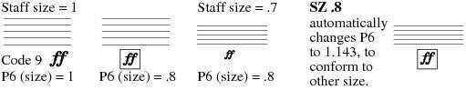

Size and Point Size. SZ - PT
Every Item in SCORE is scaled by a number of size factors. The staff size is the
primary factor. Then each Item has its own size parameter. Finally the printout can be scaled to any size. Many scores will have staves of varying sizes. At the
same time it may be desired to have similar objects on different staves printed at
exactly the same size.
Typing
SZ alone will give you information about the absolute size of the Item and
the size of the staff to which it is attached. If, for example, we had some number
item of size .9 (the number's P6) attached to a staff of size .8 (the staff's P5),
SZ would tell us that the absolute size of the number was .72. This means that if the
staff size were 1, the number's size parameter would have to be .72 to create a number of this particular size. In the case of text, the
PT command may be used in exactly the same way, except that the values are given in printer's points.
If a number follows
SZ, then the Item will be scaled to that absolute size.

The SZ feature only works with Code 1 (notes), Code 2 (rests), Code 3 (clefs), Code 7 (trills, etc.), Code 9 (symbol library), Code 10 (numbers), Code 12 (circles, etc.), Code 16 (text), and Code 18 (meter).
In Code 14, SZ works only with double bars and repeat bars. (P17 is changed.)
The PT feature only works with text, Code 16,
and numbers, Code 10.
Typing PT alone will give you information about the absolute point size of the text and the size of the staff to which it is attached. If PT is followed by a number, the text will be set to that point size.